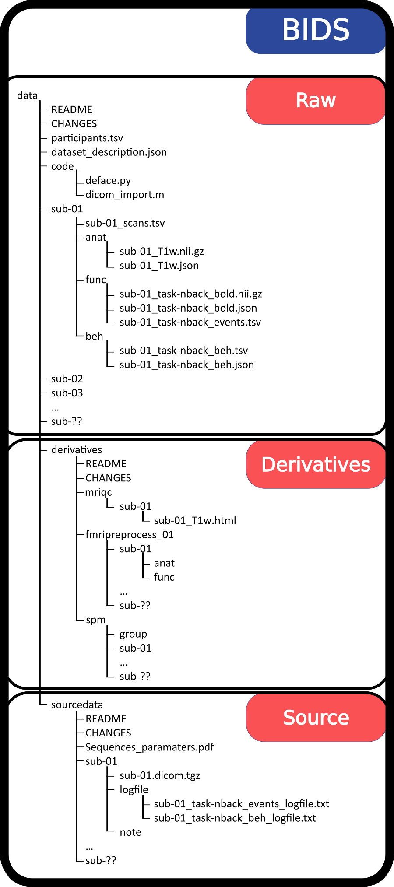

BIDS (Brain Imaging Data Structure)
Preface
Attention: the newest version of dcm2bids changed the way they write their config files…
⚠️ Breaking changes alert ⚠️
dcm2bids>=3.0.0 is not compatible with config files made for v2.1.9 and below. In order to develop dcm2bids new features we had to rewrite some of its code.
Since v3.0.0, dcm2bids has become more powerful and more flexible while reducing the burden of creating config files. Porting your config file should be relatively easy by following the How-to upgrade page. If you have any issues with it don’t hesitate to report it on Neurostars.
Be sure to check out the dcm2bids website for info about the new conventions: https://unfmontreal.github.io/Dcm2Bids/dev/upgrade/#changes-to-existing-description-and-config-file-keys
Intro
Brain Imaging Data Structure, or BIDS for short, is an effort to standardize the way researchers store their data. BIDS provides a common, consistent directory hierarchy and naming system for files, as well as supporting ‘sidecar’ files for key associated data (like stimulus timing information for task fMRI). With a fixed standard for representing data, this has supported the creation of a number of ‘BIDS apps’, self-contained programs that can automatically process data arranged according to BIDS.
Resources
Main website: https://bids.neuroimaging.io/
Here is a great introductory resource: Getting started with BIDS
Dr. Alexander Weber gave a journal club presentation you can check out here: https://drive.google.com/file/d/1PLNlKTI0xGlbKmIgfwzR8j6nv9RlmxOa/preview
File organization
Part of BIDS is making sure all files are located and named in a standardized format. Generally it should look something like this:
project/
└── subject
└── session
└── datatypeMore specifically:
myProject/
└── sub-01
└── ses-01
└── anatHere's an example:
ds001
├── dataset_description.json
├── participants.tsv
├── sub-01
│ ├── anat
│ │ ├── sub-01_inplaneT2.nii.gz
│ │ └── sub-01_T1w.nii.gz
│ └── func
│ ├── sub-01_task-balloonanalogrisktask_run-01_bold.nii.gz
│ ├── sub-01_task-balloonanalogrisktask_run-01_events.tsv
│ ├── sub-01_task-balloonanalogrisktask_run-02_bold.nii.gz
│ ├── sub-01_task-balloonanalogrisktask_run-02_events.tsv
│ ├── sub-01_task-balloonanalogrisktask_run-03_bold.nii.gz
│ └── sub-01_task-balloonanalogrisktask_run-03_events.tsv
├── sub-02
│ ├── anat
│ │ ├── sub-02_inplaneT2.nii.gz
│ │ └── sub-02_T1w.nii.gz
│ └── func
│ ├── sub-02_task-balloonanalogrisktask_run-01_bold.nii.gz
│ ├── sub-02_task-balloonanalogrisktask_run-01_events.tsv
│ ├── sub-02_task-balloonanalogrisktask_run-02_bold.nii.gz
│ ├── sub-02_task-balloonanalogrisktask_run-02_events.tsv
│ ├── sub-02_task-balloonanalogrisktask_run-03_bold.nii.gz
│ └── sub-02_task-balloonanalogrisktask_run-03_events.tsv
...
...
└── task-balloonanalogrisktask_bold.jsonTutorial
As always, Andy’s Brain Book has a tutorial where you can download data and follow along: https://andysbrainbook.readthedocs.io/en/latest/OpenScience/OS/BIDS_Overview.html
Examples
https://github.com/bids-standard/bids-examples
This repository contains a set of BIDS-compatible datasets with empty raw data files. These datasets can be useful to:
- write lightweight software tests
- serve as an example on how a BIDS dataset can be structured
dcm2bids
One of the nicest ways to convert your raw .dcm files to NIfTI AND organize into BIDS structure is to use a command line program called dcm2bids
What dcm2bids does:
- Reads your raw DICOMs.
- Uses
dcm2niixunder the hood to convert images to NIfTI format (commonly used in neuroimaging). - Renames and organizes them into the correct BIDS directory structure (e.g., sub-01/anat/sub-01_T1w.nii.gz, sub-01/func/sub-01_task-rest_bold.nii.gz).
- Adds JSON sidecar files with acquisition metadata.
- Can be customized with a configuration file (
.json) to map your scanner sequence names to BIDS-compatible names.
Info and Tutorials
Please take a look at the documentation to:
Another tutorial
Install
Dependencies: you will need dcm2niix installed first though
pip install dcm2bidsUpgrading
pip install --upgrade dcm2bidsExample Walkthrough
1. Create a root BIDS directory
Create and enter your root BIDS directory where everything will live:
cd /your/projects/folder/for/example/ && mkdir 2020-09-17_BCCHR_test_AlexW/
cd 2020-09-17_BCCHR_test_AlexW/2. Create the basic architecture of your directory
dcm2bids_scaffoldThis gives us several generics folders and files.
One of the created folders is named 'sourcedata/'
data from Xnat is downloaded as a zip into 'sourcedata/'
then:
cd sourcedata
unzip aweber-20200918_110552.zipwhich extracts the dicoms into a folder: aweber-20200918_110552/
inside of which are numbered subfolders for each acquisition scan
going back to /your/projects/folder/for/example/2020-09-17_BCCHR_test_AlexW/
cd ..3. Use the helper function to get a sense of what NIfTI files and json sidecar files you are working with
dcm2bids_helper -d sourcedata/aweber-20200918_110552/This command will convert the DICOMs files to NIfTI files and save them inside 'tmp_dcm2bids/helper/'
with GE data, I find this gives bad naming conventions. Alternatively you could run something like this:
dcm2niix -o tmp_dcm2bids/helper -b y -ba y -z y -f ‘%3s %f %d %r’ sourcedata/AMW01/which translates to:
-o = output folder [note: this folder should already exist]
-b y = BIDS sidecar yes
-ba y = anonymize BIDS yes
-z y = gz compress images yes
-f '%3s %f %d %r' = filename with series number, folder name,
description and instance number]
We should see a list of compressed NIfTI files (nii.gz) with their respective sidecar files (.json).
For this example, we will imagine we only have three acquisitions:
003_LONGMBfMRI_SAG_FSPGR_3D\_.9X.9X.9_20200917132212.json\
003_LONGMBfMRI_SAG_FSPGR_3D\_.9X.9X.9_20200917132212.nii.gz\
005_LONGMBfMRI_fMRI_Resting_State_AP_20200917132212.json\
005_LONGMBfMRI_fMRI_Resting_State_AP_20200917132212.nii.gz\
006_LONGMBfMRI_fMRI_Resting_State_PA_20200917132212.json\
006_LONGMBfMRI_fMRI_Resting_State_PA_20200917132212.nii.gz4. Build your configuration file with the help of the content of
`tmp_dcm2bids/helper`:Now we will create a configuration file called dcm2bids_config.json (this is just an example, it could be whatever we want) in the code/ folder.
Use any text editor to create the file with the contents:
{
"descriptions": [
{
"datatype": "anat",
"suffix": "T1w",
"criteria": {
"SeriesDescription": "SAG_FSPGR_3D_.9X.9X.9*"
}
},
{
"datatype": "func",
"suffix": "bold",
"custom_entities": "task-rest-AP",
"criteria": {
"SeriesDescription": "fMRI_Resting_State_AP*"
}
},
{
"datatype": "func",
"suffix": "bold",
"custom_entities": "task-rest-PA",
"criteria": {
"SeriesDescription": "fMRI_Resting_State_PA*"
}
}
]
}5. Run dcm2bids
Now we are ready to run dcm2bids with our config file:
dcm2bids -d sourcedata/aweber-20200918_110552/LONGMBfMRI \
-p 01 -c code/dcm2bids_config.jsonwhere: -d is the sourcedirectory; -p is the subject ID; and -c is the config file.
A bunch of information is printed to the terminal and we can verify that the data are now in BIDS.
ls sub-01/*sub-01/anat:\
sub-01_T1w.json sub-01_T1w.nii.gz
sub-01/func:\
sub-01_task-rest_bold.json sub-01_task-rest_bold.nii.gzdcm2bids creates log files inside /your/projects/folder/for/example/tmp_dcm2bids/log
7. Validate
Run the bids-validator to check your directory.
This needs to be installed separately; or you can use the web interface and upload your data.
See Section 9
Don't forget to create a .bidsignore file at the root of your BIDS directory with tmp_dcm2bids/* inside.
echo tmp_dcm2bids >> .bidsignoreConfig Examples:
1. Example config file:
https://unfmontreal.github.io/Dcm2Bids/dev/how-to/create-config-file/
{
"descriptions": [
{
"datatype": "anat",
"suffix": "T2w",
"criteria": {
"SeriesDescription": "*T2*",
"EchoTime": 0.1
},
"sidecar_changes": {
"ProtocolName": "T2"
}
},
{
"id": "task_rest",
"datatype": "func",
"suffix": "bold",
"custom_entities": "task-rest",
"criteria": {
"ProtocolName": "func_task-*",
"ImageType": ["ORIG*", "PRIMARY", "M", "MB", "ND", "MOSAIC"]
}
},
{
"datatype": "fmap",
"suffix": "fmap",
"criteria": {
"ProtocolName": "*field_mapping*"
},
"sidecar_changes": {
"IntendedFor": "task_rest"
}
},
{
"id": "id_task_learning",
"datatype": "func",
"suffix": "bold",
"custom_entities": "task-learning",
"criteria": {
"SeriesDescription": "bold_task-learning"
},
"sidecar_changes": {
"TaskName": "learning"
}
},
{
"datatype": "fmap",
"suffix": "epi",
"criteria": {
"SeriesDescription": "fmap_task-learning"
},
"sidecar_changes": {
"TaskName": "learning",
"IntendedFor": "id_task_learning"
}
}
]
}Where:
- “datatype” is the folder the file will be stored under. Can be:
- func (task based and resting state functional MRI)
- dwi (diffusion weighted imaging)
- fmap (field inhomogeneity mapping data such as field maps)
- anat (structural imaging such as T1, T2, PD, and so on)
- perf (perfusion)
- meg (magnetoencephalography)
- eeg (electroencephalography)
- ieeg (intracranial electroencephalography)
- beh (behavioral)
- pet (positron emission tomography)
- micr (microscopy)
- nirs (near infrared spectroscopy)
- motion (motion)
- mrs (magnetic resonance spectroscopy)
- phenotype (measurement and survey data)
- “suffix” is literally what will be written at the end of the file. Common examples: T1w, T2w, epi, bold, dwi…
- “criteria” is what will be searched in the sidecar
jsonfile to identify your file. - “id” this is literally an id you give this to use later when you need to refer to this scan. An example is when you need to set an “IntendedFor” for the fmap to point to the right func
- “custom_entities” is useful for things like fMRI, when you will want identify if it is rest, or listening, or motor, etc.
- “sidecare_changes” is when you are not happy with the
jsonsidecar that is automatically made, and you need to add some information - “B0FieldIdentifier” tells us what kind of correction you intend: e.g. “pepolar_fmap0”
So, the above example has:
- a T2w scan, that will be stored in the
anatfolder - an fMRI scan that will be stored in the
funcfolder; has been given an ‘id’ for later when we need to associatefmaps to it; what kind of task it is (rest) - an field map scan to be used with the rest task: “IntendedFor”
- another fMRI scan that will be stored in the
funcfolder; has been given a different ‘id’ for later when we need to associatefmaps to it; what kind of task it is (rest) - another field map to be used to correct the learning task
2. Another example
Another example for T1w, resting-state fMRI, and two short blip-up / blip-down spin-echo sequences for field-map estimation:
{
"dcm2niixOptions": "-b y -ba y -z y -f '%3s_%f_%d_%r'",
"descriptions": [
{
"datatype": "anat",
"suffix": "T1w",
"criteria": {
"SeriesDescription": "SAG_FSPGR_3D_.9X.9X.9"
}
},
{
"id": "task-rest",
"datatype": "func",
"suffix": "bold",
"custom_entities": "task-rest",
"criteria": {
"SeriesDescription": "RestStatefMRI_HB4PA1"
},
"sidecar_changes": {
"TaskName": "rest"
}
},
{
"datatype": "fmap",
"suffix": "epi",
"custom_entities": "dir-AP",
"criteria": {
"SeriesDescription": "SE_fMRI_pepolar_0",
"PhaseEncodingPolarityGE": "Unflipped"
},
"sidecar_changes": {
"IntendedFor": [
"task-rest"
],
"B0FieldIdentifier": "pepolar_fmap0"
}
},
{
"datatype": "fmap",
"suffix": "epi",
"custom_entities": "dir-PA",
"criteria": {
"SeriesDescription": "SE_fMRI_pepolar_1",
"PhaseEncodingPolarityGE": "Flipped"
},
"sidecar_changes": {
"IntendedFor": [
"task-rest"
],
"B0FieldIdentifier": "pepolar_fmap0"
}
}
]
}“dcm2niixOptions”: “-b y -ba y -z y -f ‘%3s_%f_%d_%r’”,
This tells dcm2bids how to run dcm2niix. I found this created more helpful filenames when running dcm2bids_helper
Currently dcm2bids will create json files for the fmaps that have an “IntendedFor”” field that fmriprep will not correctly know what to do with:
"IntendedFor": "bids::sub-AHIE001/func/sub-AHIE001_task-rest_dir-AP_bold.nii.gz",You will need to rewrite this for now to say:
"IntendedFor": "func/sub-AHIE001_task-rest_dir-AP_bold.nii.gz",You will notice that both the bids:: and the sub-AHIE001 has been removed.
fmriprep plans to eventually fix this: https://neurostars.org/t/dcm2bids-version-3-1-0-intended-for-field/27888/4
Not super helpful to anybody right now, but the next release will have experimental support for BIDS-URIs. (January 2024)
Automate BIDS
Here is a tutorial on how to create a bash shell script to automate this process
https://reproducibility.stanford.edu/bids-tutorial-series-part-1b/
Better json writing
jo
jo is a simple program that makes writing json files easier (I think)
https://github.com/jpmens/jo
Example:
jo -p descriptions=$(jo -a $(jo datatype=anat suffix=T1w criteria=$(jo SeriesDescription=SAG_FSPGR_3D_.9X_.9X.9*)) $(jo datatype=func suffix=bold custom_entities=task-rest-AP criteria=$(jo SeriesDescription=fMRI_Resting_State_AP*)))Results in:
{
"descriptions": [
{
"datatype": "anat",
"suffix": "T1w",
"criteria": {
"SeriesDescription": "SAG_FSPGR_3D_.9X_.9X.9*"
}
},
{
"datatype": "func",
"suffix": "bold",
"custom_entities": "task-rest-AP",
"criteria": {
"SeriesDescription": "fMRI_Resting_State_AP*"
}
}
]
}Validator
You can test whether your data is in BIDS format using this link and uploading the main folder
Or you can install a program on the computer you are using:
bids-validator
Install
sudo apt-get install nodejs
sudo apt-get install npm
sudo npm install -g bids-validatorRun
bids-validator .Or, if you're using docker:
docker run -ti --rm -v /your/projects/folder/for/example:/data:ro bids/validator /databut change /your/projects/folder/for/example to where your BIDS files are.
If you are in the directory already, then '.' is your current directory.
Don't forget to create a .bidsignore file at the root of your BIDS directory with tmp_dcm2bids/* inside.
source, rawdata, derivatives
If you are unclear how you can organize your BIDS dataset (named rawdata) in relation the data that it was built from (named sourcedata) and in relation to the preprocessed that came from it (named derivatives) maybe the example figure below can help.

BIDS Example: converting .PAR/REC files to BIDS
- In a new "BIDS" folder, run
dcm2bids_scaffold- copy data into the "sourcedata" folder it created
cp -a /data* BIDS/sourcedata- run
dcm2bids_helper -d sourcedatato convert files to NIfTI (the nifti and json files are in tmp_dcm2bids)
- write config file in code folder
Example:
nano dcm2bids_config.json{
"descriptions": [
{
"datatype": "anat",
"suffix": "T1w",
"criteria": {
"SidecarFilename": "003*"
}
},
{
"datatype": "func",
"suffix": "bold",
"custom_entities": "task-rest_run-01",
"criteria": {
"SidecarFilename": "006*"
},
"sidecar_changes": {
"TaskName": "rest"
}
}
]
}- write conversion script in parent folder (BIDS) of sourcedata. This file should specify the subject (-p) and session (-s) that corresponds to the data in sourcedata.
Example:
nano bids_format.shdcm2bids -d sourcedata/MINT_01_001/baseline/ -p 01 -s 01 -c code/dcm2bids_config.json
dcm2bids -d sourcedata/MINT_01_001/completion/ -p 01 -s 02 -c code/dcm2bids_config.json
dcm2bids -d sourcedata/MINT_01_002/baseline/ -p 02 -s 01 -c code/dcm2bids_config.json
dcm2bids -d sourcedata/MINT_01_002/completion/ -p 02 -s 02 -c code/dcm2bids_config.json
dcm2bids -d sourcedata/MINT_01_M137/MINT_01_SCREEN52/baseline/ -p 37 -s 01 -c code/dcm2bids_config.json
. . .
dcm2bids -d sourcedata/MINT_01_M137/completion/ -p 37 -s 02 -c code/dcm2bids_config.json
dcm2bids -d sourcedata/MINT_01_M138/baseline/ -p 38 -s 01 -c code/dcm2bids_config.json
dcm2bids -d sourcedata/MINT_01_M138/completion/ -p 38 -s 02 -c code/dcm2bids_config.json- Run
bids_format.shwith
./bids_format.sh- Run bids validator
docker run -ti --rm -v /mnt/WeberLab/Projects/Alzheimer_Nygaard/bids_all_subjects/:/data:ro bids/validator /dataTo get rid of some of the errors, you may need to:
make a file named
.bidsignoreand have files that you want to tell bids to ignore:tmp_dcm2bids,bids_format.shdelete "funding" line from
dataset_description.jsonadd a line of text to README file
- Run
fmriprepfrombids_all_subjects. See the fmriprep page for details
fmriprep-docker . derivatives/ participant --fs-license-file /usr/local/freesurfer/license.txt